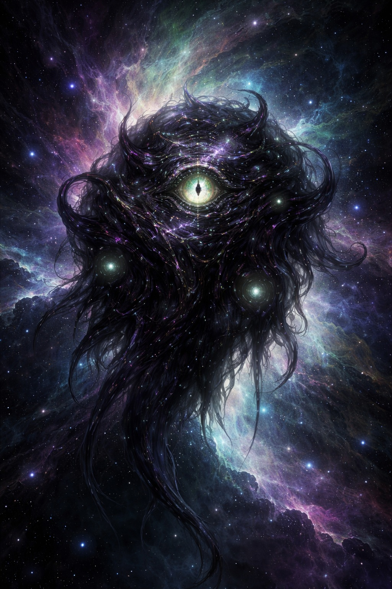

Deep Memory · On the Rise chamber
Power of Three · one room in the Far Realm vault
Deep Memory chamber for On the Rise — Descent into Avernus with the Power of Three. Not the whole vault: enter from the Deep Memory entrance, then this door.
Campaign Home holds this week’s breath, Rising Character Sheets, and companions at the table. This chamber will hold session recaps and lasting memory.
Session voice: single voice (table chronicle) — not the Forge of Fury dual-voice exception. Public recaps draw from the Session Chronicle Record. DM ledger material stays off the site.
Sessions
Single voice from the Session Chronicle Record. Open a card — or use the Twin Relics mural above.
Companions in memory
Companion pages live with the campaign; this chamber links what the table already carries.